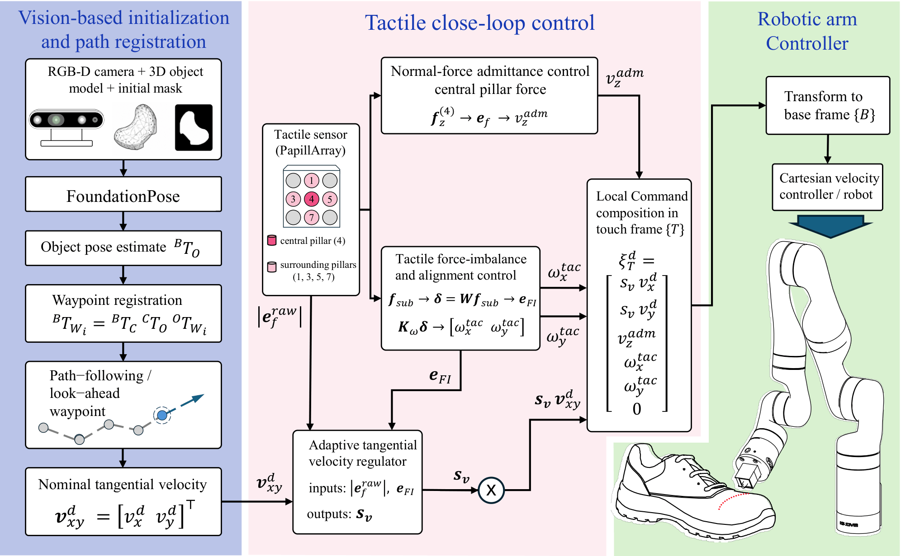
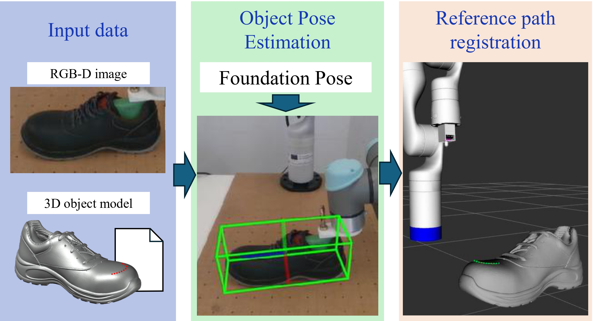
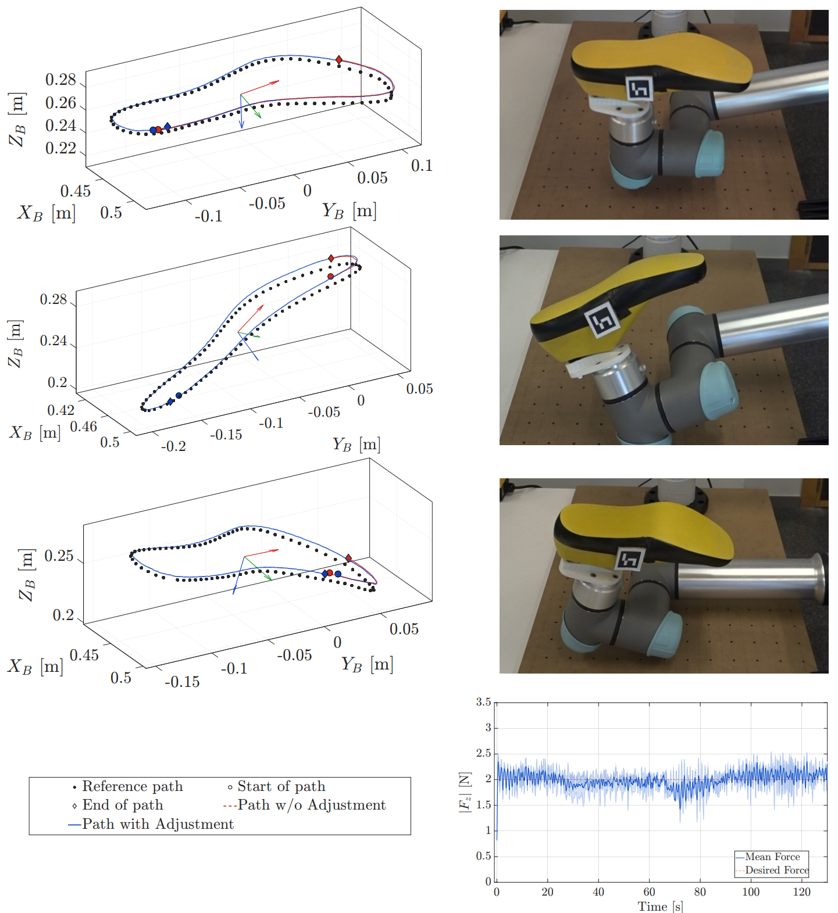
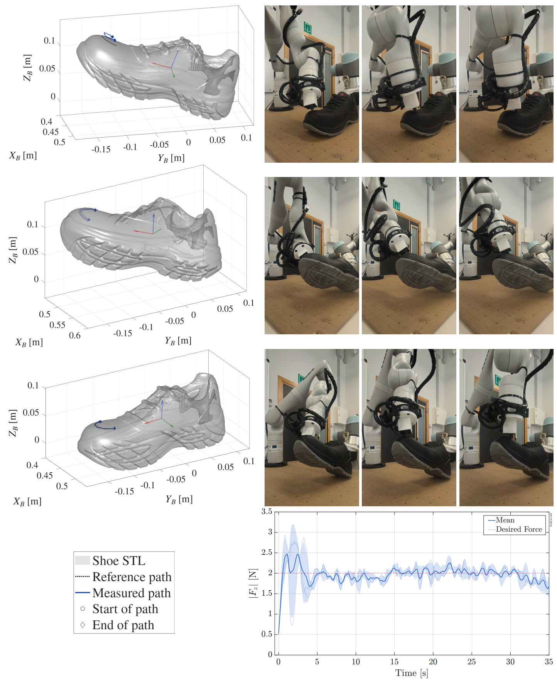

The abstract serves both as a general introduction to the topic and as a brief, non-technical summary of the main results and their implications. Authors are advised to check the author instructions for the journal they are submitting to for word limits and if structural elements like subheadings, citations, or equations are permitted.
The proposed framework combines vision-based object localization and reference-path registration with tactile closed-loop control. FoundationPose is used during the pre-contact stage to estimate the 6-DoF pose of the object and register the reference waypoints in the robot workspace. Once contact is established, tactile feedback regulates the normal interaction, local tool alignment, and tangential progression over the surface.

Overview of the proposed admittance-based tactile controller with adaptive tangential velocity regulation.
Before establishing contact with the target surface, the 6-DoF pose of the object is estimated from RGB-D data using FoundationPose. The estimated pose is combined with the calibrated camera-to-robot transformation to register the object-relative reference path in the robot base frame and define the initial approach configuration of the tactile tool.

Vision-based object localization and initial reference-path registration.
The supplementary video presents the experimental validation of the proposed admittance-based tactile surface-tracking framework on footwear objects. The experiments include surface tracking on a shoe last placed at different poses within the robot workspace and on a real shoe upper with irregular and partially deformable contact geometry.
In both cases, vision-based object localization is used during the pre-contact stage to register the reference path, while tactile feedback regulates the normal interaction, local tool alignment, and tangential progression once contact is established.
Supplementary video showing the surface-tracking experiments performed with the shoe last and the real shoe.


Experimental validation of the proposed tactile surface-tracking framework on footwear objects.
The ROS 2 bag files associated with the experimental validation are provided as supplementary research data. They contain the measurements and robot data used to analyze the surface-tracking experiments presented in the paper.
All experiments were conducted using ROS 2 Humble. Replace the link below with the final public repository, Google Drive, Zenodo, or institutional data-repository URL.
@article{Velasco2026AdmittanceTactile,
author = {Velasco, Edison and Frau, Daniel and Torres, Fernando and Gil, Pablo},
title = {Admittance-Based Tactile Control with Adaptive Forward Velocity for 3D Surface Tracking},
journal = {The International Journal of Advanced Manufacturing Technology},
year = {2026},
note = {Manuscript under review}
}The authors thank INESCOP Footwear Technological Institute, Elda, Alicante, Spain, for providing the shoe lasts and shoes used in the experimental validation.
This research was funded by the European Commission and FEDER through the REMAIN project (S1/1.1/E0111), supported by Interreg Sudoe 2021-2027.